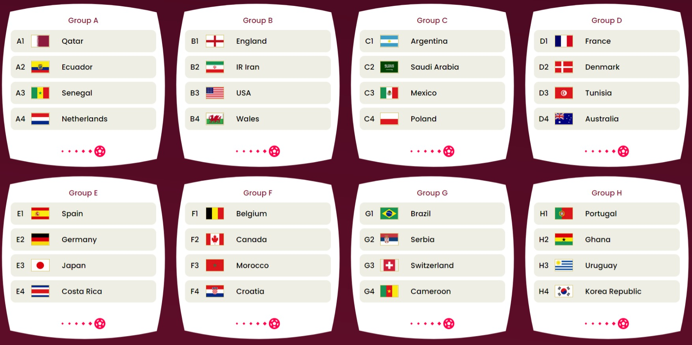

La Coupe du Monde de la FIFA™, qui a lieu tous les quatre ans, réunit 32 nations pour une compétition internationale. Les qualifications continentales donnent lieu à une phase finale passionnante, qui rassemble les supporters autour d'une même passion et d'un même amour pour le football.
| amerique du sud |
|---|
| bresil |
| argentine |
| europe |
|---|
| france |
| portugale |
| afrique |
|---|
| tunisie |
| maroc |